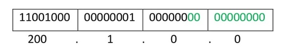

Supernetting is the opposite of Subnetting. In subnetting, a single big network is divided into multiple smaller subnetworks. In Supernetting, multiple networks are combined into a bigger network termed as a Supernetwork or Supernet.
Supernetting is mainly used in Route Summarization, where routes to multiple networks with similar network prefixes are combined into a single routing entry, with the routing entry pointing to a Super network, encompassing all the networks. This in turn significantly reduces the size of routing tables and also the size of routing updates exchanged by routing protocols.
More specifically,
- When multiple networks are combined to form a bigger network, it is termed as super-netting
- Super netting is used in route aggregation to reduce the size of routing tables and routing table updates
There are some points which should be kept in mind while supernetting:
- All the IP address should be contiguous.
- Size of all the small networks should be equal and must be in form of 2n.
- First IP address should be exactly divisible by whole size of supernet.
Example – Suppose 4 small networks of class C:
200.1.0.0, 200.1.1.0, 200.1.2.0, 200.1.3.0
Build a bigger network which have a single Network Id.
Explanation – Before Supernetting routing table will be look like as:
| Network Id | Subnet Mask | Interface |
|---|---|---|
| 200.1.0.0 | 255.255.255.0 | A |
| 200.1.1.0 | 255.255.255.0 | B |
| 200.1.2.0 | 255.255.255.0 | C |
| 200.1.3.0 | 255.255.255.0 | D |
First, lets check whether three condition are satisfied or not:
- Contiguous: You can easily see that all network are contiguous all having size 256 hosts.
Range of first Network from 200.1.0.0 to 200.1.0.255. If you add 1 in last IP address of first network that is 200.1.0.255 + 0.0.0.1, you will get the next network id that is 200.1.1.0. Similarly, check that all network are contiguous. - Equal size of all network: As all networks are of class C, so all of the have a size of 256 which in turn equal to 28.
- First IP address exactly divisible by total size: When a binary number is divided by 2n then last n bits are the remainder. Hence in order to prove that first IP address is exactly divisible by while size of Supernet Network. You can check that if last n v=bits are 0 or not.
In given example first IP is 200.1.0.0 and whole size of supernet is 4*28 = 210. If last 10 bits of first IP address are zero then IP will be divisible.

Last 10 bits of first IP address are zero (highlighted by green color). So 3rd condition is also satisfied.
- Control and reduce network traffic
- Helpful to solve the problem of lacking IP addresses
- Minimizes the routing table
- It cannot cover different area of network when combined
- All the networks should be in same class and all IP should be contiguous
Therefore, you can join all these 4 networks and can make a Supernet. New Supernet Id will be 200.1.0.0.
Advantages of Supernetting –
Disadvantages of Supernetting –